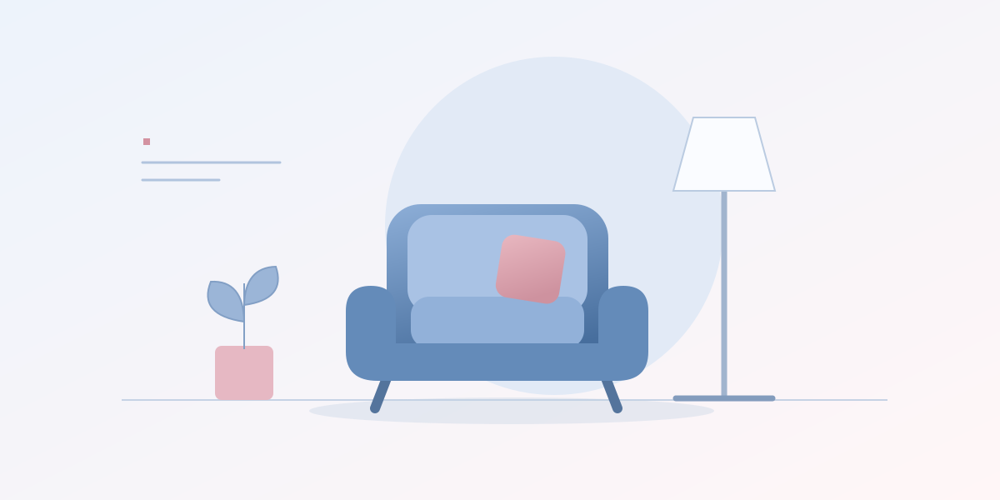

Как это устроено
Новый сервис рассчитан на сделки между пользователями. Он дополняет программу Buyback & Resell, в которой подходящие товары можно продать обратно IKEA.
Для покупателя это возможность найти вещь с предыдущим владельцем. Среди предложений могут быть и товары, которые уже исчезли из обычного ассортимента.
Что нужно учитывать
Объявление относится к британскому рынку. На площадку принимают не все товары: в частности, исключены матрасы, бытовая техника и еда.
Условия конкретной сделки и состояние вещи стоит смотреть в объявлении. Сам запуск сервиса не говорит о качестве отдельного предложения.
На чём основана новость
Сообщение IKEA о запуске площадки в Великобритании На странице источника стоит дата 6 октября; в тексте объявления указан запуск 7 октября. В макете показана дата страницы источника.
Пересказ и пояснения РейтингРу. Ссылка ведёт к исходному сообщению.РейтингРу · Дом и услуги Все новости